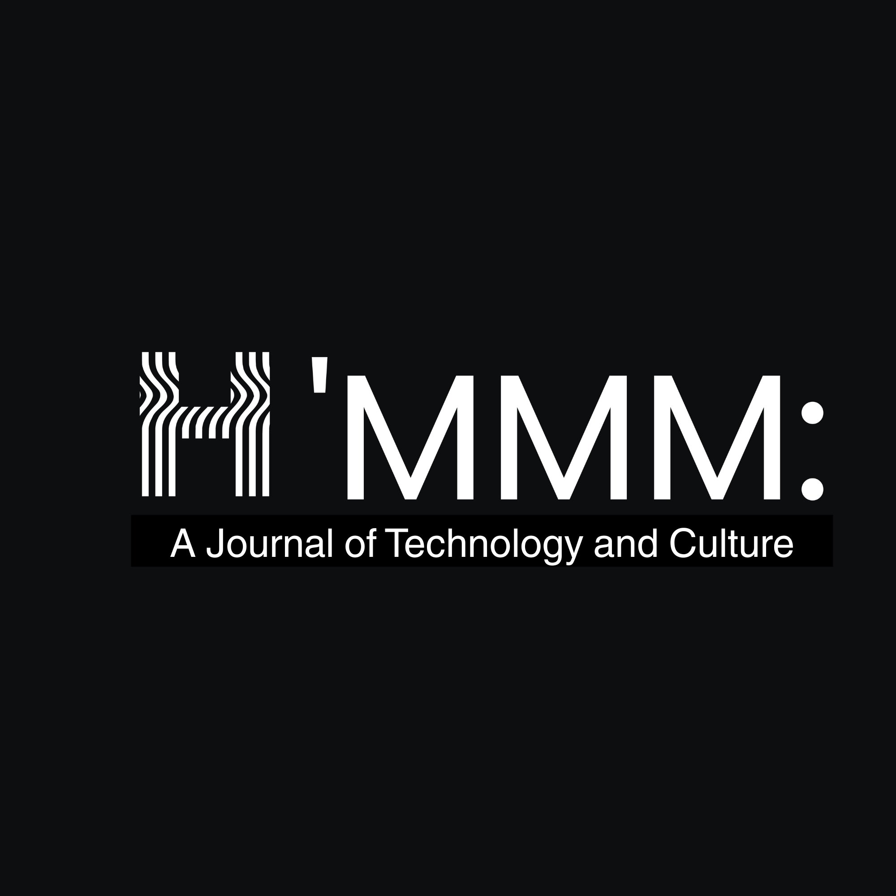

A new, peer-reviewed online journal publishing scholarship and creative work that invents rather than merely analyzes.
Born from the electrate tradition associated with Gregory Ulmer, but not bound by it, H'MMM publishes work across the humanities, music and sound, movies and image, and media and genre.
If your work feels too strange for traditional journals, too playful for conventional theory, or too thoughtful for platforms optimized for engagement metrics, H'MMM is likely its home.
We welcome essays, media artifacts, multimodal compositions, visual and sonic projects, interactive works, and hybrid formats. We welcome serious works, unserious works, and works that refuse to decide which they are.